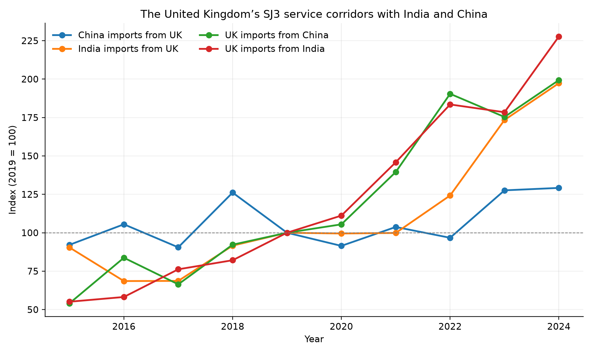
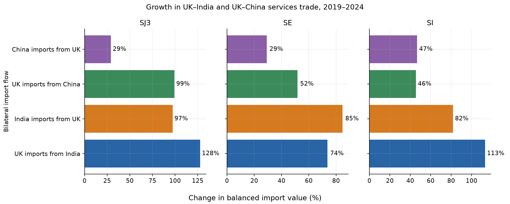

From: How Does the Civil Engineering Industry Economy Change under an AI Shock? The United Kingdom’s Service Links with India and China
Eurostat enterprise AI use, EU-27, NACE M vs F.
UK APS employment change, civil-adjacent SOC 2020.

UK BaTIS: India SJ3, China SE, India SI.

Event study, year × ΔM TANY.

ILO ISIC M vs F employment growth.

EU SJ3 imports vs Chinese construction services.

ΔM TANY vs Δ log India SJ3.

Leave-one-importer-out, TANY.

NACE M71 vs F GVA.

APS vs Eloundou and Felten AIOE.

Felten AIIE, US construction.

EU-27 NLG vs ML vs construction NLG.

2024 NLG, NACE M vs F.

Event study, year × ΔM TNLG.

ΔTNLG vs Δ log India SJ3.

EU-27 NLG by NACE.

SBS turnover growth, M71 vs F.

SBS employment growth, M71 vs F.

ΔTNLG vs M71 turnover change.

M71 turnover levels.

US CES NAICS 54 (too broad).

UK–India and UK–China SJ3 corridors, 2019 = 100.

UK–India and UK–China service growth by category.
